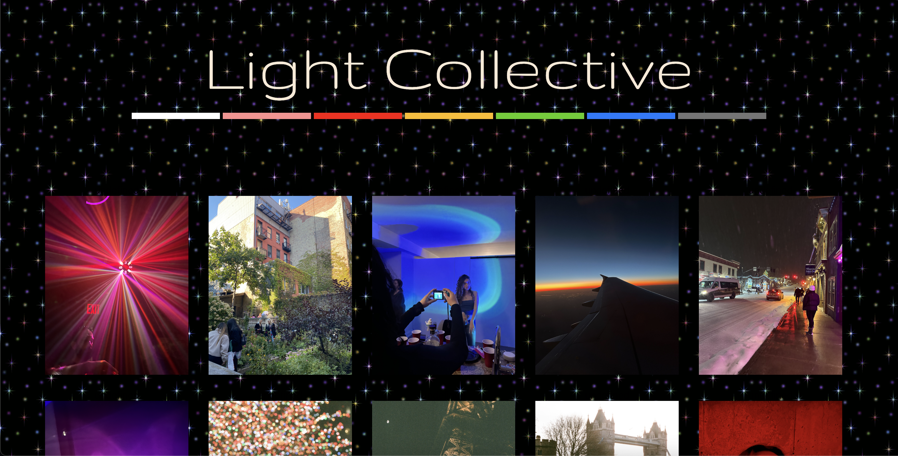

Light Collective by Claire Dossey
This is a site Claire designed to show off a collection of picture's she taken of different lightsources. From warm sunshine to techno colored lights, there's a wide array in her collection.



This is the homepage when opening the site. It features the title at the top with colored bars below, representing the images organized by color. The pictures are organized in rows of five.
The site background is fixed with a gif of twinkling mutlicolored stars, reminiscent of the collection. Scroll to view the collection. Hover over with your mouse to view details about each picture different categories, including location, time, main color, etc.
Click on the colored bars and go to a new page. I clicked to view the pink section. Each section includes an audio clip that Claire feels embodies that color. It adds to the ambience of the site and colorful feel.